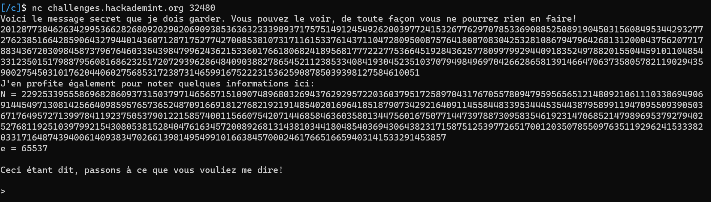

Oracle Tranquille 1&2 | hackademint CTF 2022 | Catégorie Crypto | [Vozec/FR]
September 19, 2022
Oracle Tranquille 1&2 | Hackademint 2022
Nécessaires
- Python3 + Pwntools
Descriptions :
- Challenge 1 :
Nous avons trouvé un étrange service ouvert sur un de nos services hier. Complot des Illuminati? Prise de pouvoir des machines ? Opération marketing pour la sortie du prochain album de Justin Bieber ? Simple Oracle de déchiffrement RSA? Difficile de trancher. Pourriez-vous y jeter un coup d'œil?
- Challenge 2 :
Le serveur semble avoir évolué depuis votre dernière enquête ! Évolution spontanée des IAs? Rayons cosmiques ayant modifié le code? Mise à jour en prod faite par le stagiaire ? Début d'une révolution marxiste ? Rien n'est moins sûr. Pourriez-vous allez enquêter ?
Flag
Star{L3s_0r4cl3s_RSA_s0n7_si_fr4g1l35_uWu}
Star{L3_m0dul3_357_t0uj0ur5_7r0uv4bl3_oWo}
Solution détaillée
Ce challenge est un classique dans les challenges de CTF basé sur le chiffrement RSA .
C’est un Oracle de déchiffrement.
L’idée est simple, on nous donne le Flag chiffré avec plus ou moins d’indications sur les paramètres de clés et on doit se débrouiller pour le déchiffrer.
Challenge 1:
La première étape est évidemment de se connecter avec netcat :

On nous donne ici:
cen
Si on tente de déchiffrer le flag chiffré directement, on nous renvoie :
Je refuse de répondre à ceci
On va devoir tricker !
Idée 1:
On sait que : c = m**e % n
On peut donc utiliser le %n pour contourner la restriction :
Si on envoie : (c+n) , on retrouvera donc la valeur de c .
Malheureusement, cette idée est bloquée => Je refuse de répondre à ceci
Idée 2:
On sait que le chiffrement RSA est Homomorphique .
Ainsi, on peut déchiffrer :
-c-1
Multiplier les résultats entre eux et ainsi obtenir le flag en appliquantle modulo n.
On code rapidement :
from pwn import *
from factordb.factordb import FactorDB
from Crypto.Util.number import long_to_bytes
context.log_level = 'critical'
def Get_proc():
return remote('challenges.hackademint.org',32480)
def Get_infos(proc):
proc.recvuntil(b' faire!\n')
c = int(proc.recvline().decode().strip())
proc.recvuntil(b'N = ')
n = int(proc.recvline().decode().strip())
proc.recvuntil(b'>')
e = 65537
return n,c,e
def Send(proc,p):
proc.sendline(bytes(str(p),'utf-8'))
resp = proc.recvline().decode().strip()
if('Voici ma réponse' in resp):
resp = proc.recvline().decode().strip()
proc.recvuntil(b'>')
return resp
proc = Get_proc()
n,c,e = Get_infos(proc)
resp1 = int(Send(proc,-c))
resp2 = int(Send(proc,-1))
mul = (resp2*resp1) % n
print(long_to_bytes(mul))
# Star{L3s_0r4cl3s_RSA_s0n7_si_fr4g1l35_uWu}
et on obtient le flag
Challenge 2:
On se retrouve dans la configuration qu’avant mais a une chose prêt !
Nous n’avons pas N !
On ne peut donc pas réutiliser la même méthode que précédemment. *(Pas encore) *
Comment retrouver N ?
C’est très simple ; on va déchiffrer :
2,4,3,9,5,25
On obtiendra ainsi :
- c_2 = (2 ^ e) % n
- c_4 = (4 ^ e) % n
- c_3 = (3 ^ e) % n
- c_9 = (9 ^ e) % n
- c_5 = (5 ^ e) % n
- c_25 = (25 ^ e) % n
D'où :
- (c_2 ^ 2) = c_4 % n
- (c_3 ^ 2) = c_9 % n
- (c_2 ^ 5) = c_25 % n
Enfin :
- k_1 = (c_2 ^ 2) - c_4
- k_2 = (c_3 ^ 2) - c_9
- k_3 = (c_2 ^ 5) - c_25
Et :
n = GCD(k_1,GCD(k_2,k_3))
# PGCD des 3 entiers (k_1,k_2,k_3)
On re-code ainsi :
c_2,c_4 = Send(proc,2),Send(proc,4)
c_3,c_9 = Send(proc,3),Send(proc,9)
c_5,c_25 = Send(proc,5),Send(proc,25)
k1 = c_2**2 - c_4
k2 = c_3**2 - c_9
k3 = c_5**2 - c_25
n = GCD(k1,GCD(k2,k3))
assert n != 0
Script Final complet :
from pwn import *
from factordb.factordb import FactorDB
from Crypto.Util.number import long_to_bytes,GCD
context.log_level = 'critical'
def Get_proc():
return remote('challenges.hackademint.org',30894)
def Get_infos(proc):
proc.recvuntil(b' craintes:\n')
c = int(proc.recvline().decode().strip())
proc.recvuntil(b'>')
e = 65537
return c,e
def Send(proc,p):
proc.sendline(bytes(str(p),'utf-8'))
resp = proc.recvline().decode().strip()
if('Voici ma réponse' in resp):
resp = proc.recvline().decode().strip()
proc.recvuntil(b'>')
return int(resp)
proc = Get_proc()
c,e = Get_infos(proc)
c_2,c_4 = Send(proc,2),Send(proc,4)
c_3,c_9 = Send(proc,3),Send(proc,9)
c_5,c_25 = Send(proc,5),Send(proc,25)
k1 = c_2**2 - c_4
k2 = c_3**2 - c_9
k3 = c_5**2 - c_25
n = GCD(k1,GCD(k2,k3))
assert n != 0
resp1 = Send(proc,-c)
resp2 = Send(proc,-1)
mul = (resp2*resp1) % n
print(long_to_bytes(mul))
# b'Star{L3_m0dul3_357_t0uj0ur5_7r0uv4bl3_oWo}'